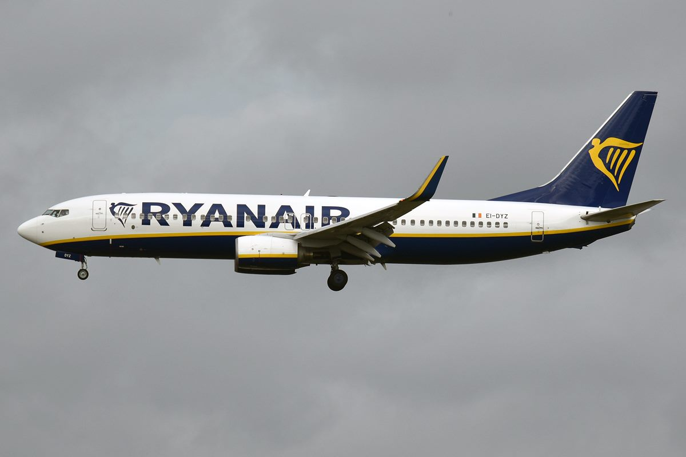

비행 중 창문 깨져 상반신이 기체 밖으로… 아내가 5분간 다리 붙잡아 구했다
라이언에어 계열 여객기에서 객실 창문이 떨어져 나가며 승객이 어깨까지 빨려 나가는 사고가 났다. 안전벨트와 아내의 손이 61세 남성의 목숨을 붙들었다.
양념자 기자 · 2026.07.19
橋국제

그리스 테살로니키에서 독일 메밍겐으로 향하던 라이언에어 계열(몰타에어 운항) 보잉 737-800 여객기에서 비행 중 객실 창문이 떨어져 나가 승객이 기체 밖으로 일부 빨려 나가는 사고가 발생했다. 항공전문매체 에어라이브와 전자신문 등이 전했다.
광고 문의 · 300×250이륙 직후 창문이 이탈하면서 기내 압력이 급락했고, 61세 세르비아 국적 남성의 머리와 어깨가 창밖으로 빨려 나갔다. 옆자리 아내가 약 5분간 남편의 다리를 붙잡았고, 주변 승객들이 합세해 그를 끌어들였다.
남성이 안전벨트를 매고 있었던 것이 결정적이었다. 기장은 즉시 회항을 결정해 출발 공항에 비상착륙했고, 남성은 부상을 입었지만 생명에는 지장이 없는 것으로 전해졌다.
그리스 언론은 엔진에서 떨어져 나온 파편이 창문을 때렸을 가능성을 제기했다. 사고 기종은 737맥스 이전 세대인 737NG로, 항공당국이 정확한 원인을 조사 중이다.
저비용 항공사의 정비 품질과 기체 노후화 관리가 다시 도마에 올랐다. ‘안전벨트 상시 착용’이라는 기본 수칙의 무게를 새삼 일깨운 사고이기도 하다.